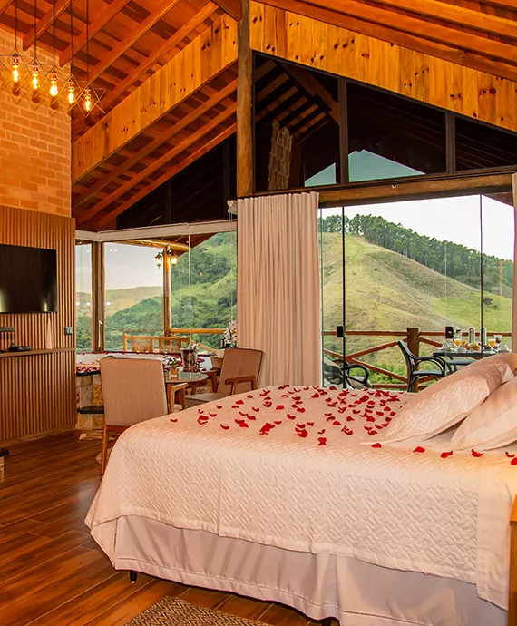

Chalés
Confortáveis, luxuosos, modernos e um com toque de classe. Assim podem ser caracterizados nossos chalés
O que são chalés?
O Chalé é um tipo de habitação que era comumente utilizada durante as estações de verão e outono. Em sua origem, remete ao tempo em que pastores construíam casas com telhados bem inclinados para a produção de leite, nos Alpes Suíços.
Com o tempo esse tipo de moradia foi ganhando mais interesse e hoje remete muito a ideia de construções utilizadas para o período de férias ou para temporadas de descanso, em áreas mais tranquilas e de paisagens naturais. No Brasil, os chalés tem chamado cada vez mais a atenção das pessoas.
Como características, os chalés são conhecidos pela arquitetura em que as paredes são de madeira e o telhado é bem inclinado. No entanto, contemporaneamente também podem ser vistos chalés que são construídos utilizando outros materiais como pedra ou concreto, dependendo da região e do clima e do estilo do morador.
De modo como remete em sua origem aos Alpes Suíços, o chalé tem como característica de construção a referência ao estilo europeu, com traços rústicos e grandes janelas que deixam a luz do dia dominar todo o ambiente interno. O resultado será um espaço muito aconchegante, harmonioso, charmoso e ótimo para relaxar e descansar a qualquer hora do dia.
Combinando com ambientes naturais, de contato com a natureza e de cenários verdes e vivos, os chalés proporcionam uma ótimas sensação para a família que durante o final de semana ou durante as férias deseja sair da agitação das grandes cidades e descansar, aproveitar o canto dos pássaros e o contato com a natureza.
De modo que, combina muito bem com a atmosfera de descanso e aconchego. Nos chalés há um estilo de construção que contribui para uma vida mais amena e tranquila, uma vez que remete a um ambiente mais acolhedor. Além disso, chalés combinam com perfeição com o clima serrano.
- 